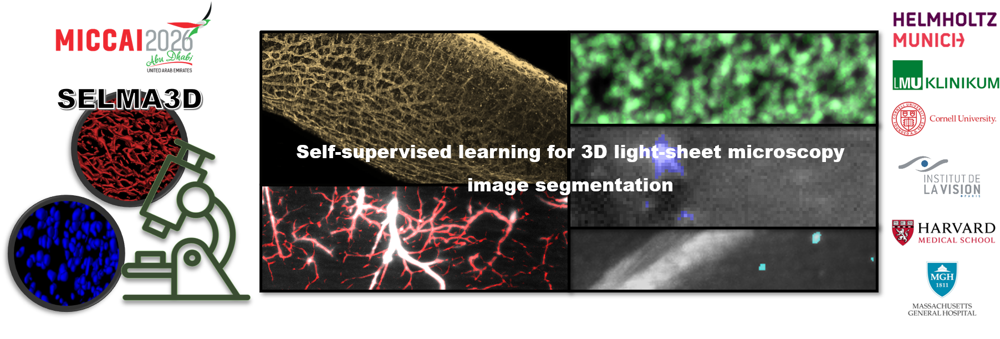

Background
Combining tissue clearing with light-sheet microscopy (LSM) enables high-contrast, ultra-high-resolution imaging of whole organs or even whole organisms [1–3], supporting studies in neuroscience, immunology, oncology, and cardiology [4–7]. A key bottleneck in translating these rich datasets into biological insight lies in automated image analysis, with segmentation serving as a fundamental step. Deep learning-based segmentation models offer promising automation [8–10], but they remain task-specific, annotation-intensive, and limited in generalizability [11], highlighting the need for scalable solutions.
It is crucial to develop generalizable or foundation models capable of serving multiple LSM image segmentation tasks. Self-supervised learning (SSL) enables pretraining on large unlabeled datasets to learn robust, transferable features, which can then be fine-tuned with small annotated datasets for specific segmentation tasks. As a result, robust and scalable segmentation models can directly facilitate a wide range of downstream biological and clinical workflows.
[1] E.H.K. Stelzer, F. Strobl, B. Chang, et al. Light sheet fluorescence microscopy. Nature Reviews Methods Primers 1(1): 73, 2021 Nov.
[2] H.R. Ueda, A. Ertürk, K. Chung, et al. Tissue clearing and its applications in neuroscience. Nature Reviews Neuroscience 21(2): 61-79, 2020 Jan.
[3] P.K. Poola, M.I. Afzal, Y. Yoo, et al. Light sheet microscopy for histopathology applications. Biomedical Engineering Letters 9: 279-291, 2019 July.
[4] H.R. Ueda, H.U. Dodt, P. Osten, et al. Whole-brain profiling of cells and circuits in mammals by tissue clearing and light-sheet microscopy. Neuron 106(3): 369-387, 2020 May.
[5] D. Zhang, A.H. Cleveland, E. Krimitza, et al. Spatial analysis of tissue immunity and vascularity by light sheet fluorescence microscopy. Nature Protocols: 1-30, 2024 Jan.
[6] J. Almagro, H.A. Messal, M.Z. Thin, et al. Tissue clearing to examine tumour complexity in three dimensions. Nature Reviews Cancer 21(11): 718-730, 2021 July.
[7] P. Fei, J. Lee, R.R.S. Packard, et al. Cardiac light-sheet fluorescent microscopy for multi-scale and rapid imaging of architecture and function. Scientific Reports 6: 22489, 2016 Mar.
[8] F. Amat, B. Höckendorf, Y. Wan, et al. Efficient processing and analysis of large-scale light-sheet microscopy data. Nature Protocols 10: 1679-1696, 2015 Oct.
[9] N. Kumar, P. Hrobar, M. Vagenknecht, et al. A light sheet fluorescence microscopy and machine learning-based approach to investigate drug and biomarker distribution in whole organs and tumors. bioRxiv 2023.09.16.558068.
[10] M.I. Todorov, J.C. Paetzold, O. Schoppe, et al. Machine learning analysis of whole mouse brain vasculature. Nature Methods 17: 442-449, 2020 Mar.
[11] Y. Zhou, M.A. Chia, S.K. Wagner, et al. A foundation model for generalizable disease detection from retinal images. Nature 622: 156–163, 2023 Sept.
[12] M. Belle, D. Godefroy, G. Couly, et al. Tridimensional visualization and analysis of early human development. Cell 169(1): 161-173, 2017 Mar.
Objective
SELMA3D aims to benchmark self-supervised learning for LSM image segmentation.
In the 2026 edition, we will build upon the 2025 framework while lowering the entry barrier and advancing the research scope by restructuring SELMA3D into two complementary tasks. These tasks are designed to isolate two central research questions in SSL for 3D LSM: method development under tightly controlled data conditions, and performance scaling under open-data conditions.
Check out the detailed tasks.